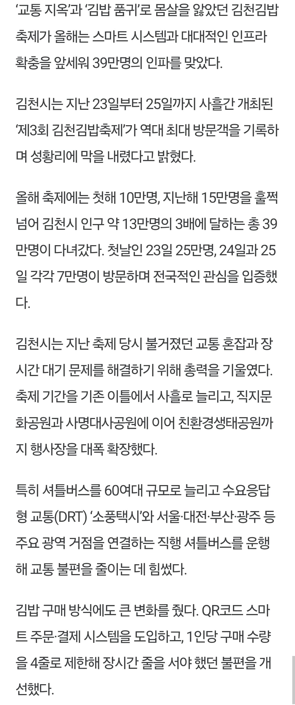
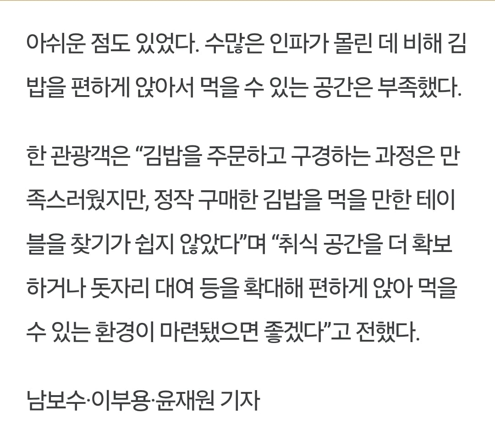

김천 인구가 13만명인데 사흘간 39만명 ㄷㄷㄷ
주말에 비 안 왔으면 45만은 넘었을 듯 ㄷㄷ
취식공간 부족이야 13만명 인구 도시 축제에 39만명이 모였으니 불가항력이고 ㅋㅋㅋ
1회차. 2만명 정도 오면 많이 오는 거겠지? 10만명 옴 -> 2회차. 작년을 교훈 삼아 10만명 분을 준비했다! 15만명 옴. -> 3회차. 20만명을 넘진 않겠지! 응. 39만명
ㅋㅋㅋㅋㅋ 이건 진짜 침공이다


김천 인구가 13만명인데 사흘간 39만명 ㄷㄷㄷ
주말에 비 안 왔으면 45만은 넘었을 듯 ㄷㄷ
취식공간 부족이야 13만명 인구 도시 축제에 39만명이 모였으니 불가항력이고 ㅋㅋㅋ
1회차. 2만명 정도 오면 많이 오는 거겠지? 10만명 옴 -> 2회차. 작년을 교훈 삼아 10만명 분을 준비했다! 15만명 옴. -> 3회차. 20만명을 넘진 않겠지! 응. 39만명
ㅋㅋㅋㅋㅋ 이건 진짜 침공이다
ㅋㅋㅋㅋ 이름하고 딱 떨어지니 안갈수가 없다고
김밥천국 김밥축제
김밥판돈으로 걷는 지방세로 김천시민 복지 개쩔게할수있겠는데 ㅋㅋㅋ
진짜 비안왔으면 40만명 훌쩍 넘었겠다 ㅋㅋㅋㅋ
올해 디펜스도 실패....ㅋㅋ
그만해!!!!!
저걸 어떻게 대비하냐 ㅋㅋㅋ
음식부족 주차공간부족 행사장위치선정도 별로였다더니
그럴만했구나...
이건 김밥 디펜스네 진짜 ㅋㅋㅋㅋ 저정도면 뭐 먹을 곳 없고 주차 공간 없는건 어쩔 수 없지 ㅠㅠㅠ
ㅋㅋㅋㅋㅋㅋㅋ 더 크고 넓은곳을 또 구해야해..?
저정도면 취식공간 부족은 어쩔수없는거아니냐
ㅋㅋㅋㅋㅋ김밥디펜스 라는 말이 존나웃기네 ㅋㅋㅋㅋㅋㅋㅋㅋ
시발 ㅋㅋㅋㅋ 담당 공무원들 조기진급좀 시켜줘라
저정도 경험 어느 지자체가도 못쌓는 경력이다
걍 자연재해라고 볼 수 있다
근데 사람 존나 몰려서 개헬파티인걸 아는데 저길 가는 사람이 폭발적으로 느는게 웃김 ㅋㅋ
와 39만 ㅋㅋㅋㅋㅋㅋㅋㅋㅋ진짜 대박닌 지역축제네